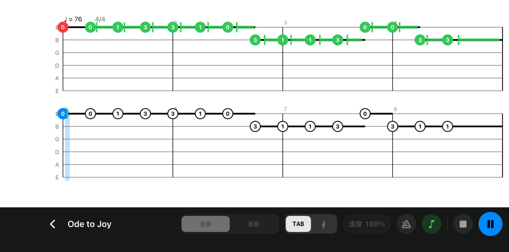
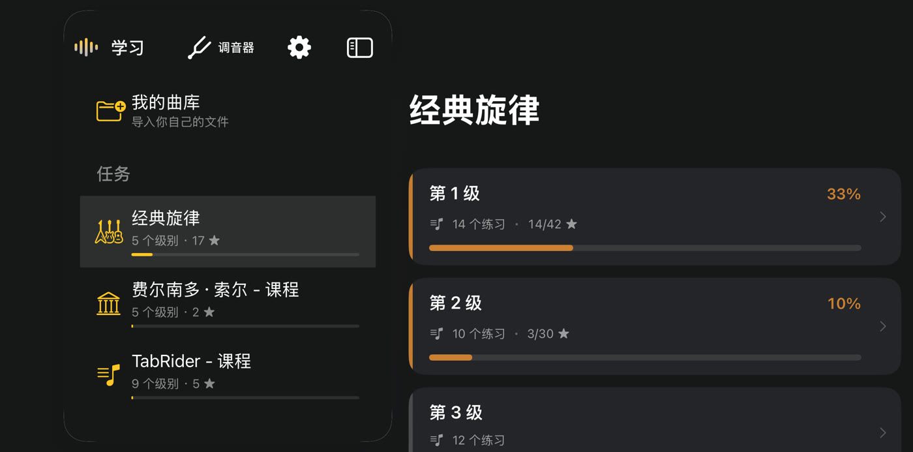
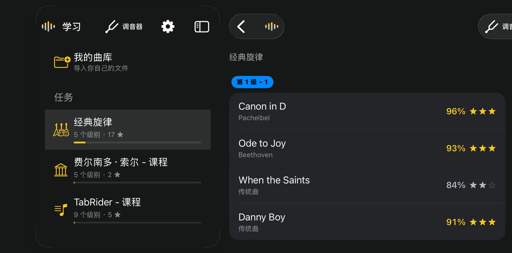
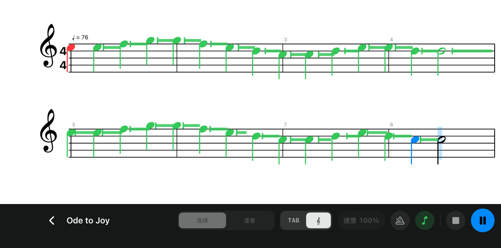
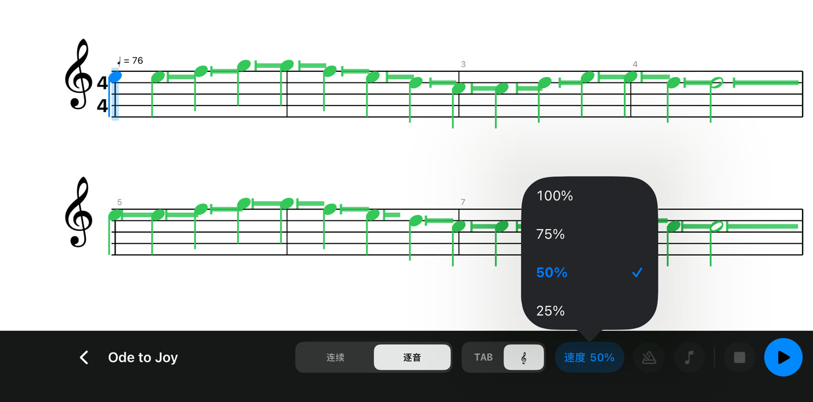
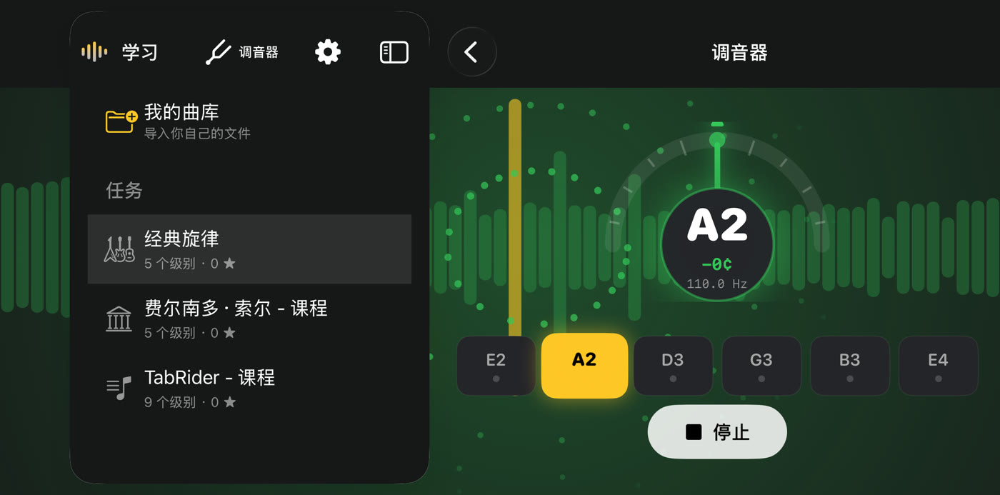

TabRider
TabRider尽情弹奏，
TabRider 为你聆听。
拿起吉他开始弹奏。TabRider 通过手机或平板听到你弹的每一个音，与你一起跟随乐谱，并随着你的进步解锁新曲目。
在 App Store 免费下载
Android 版即将登陆 Google Play

使用方法

第 1 步
选择一首曲子
三大主题，361 个练习：《致爱丽丝》《绿袖子》《丹尼男孩》等经典旋律，费尔南多·索尔的古典练习曲，以及涵盖音阶、和弦、琶音、指弹、节奏和主音的循序渐进课程。
第 2 步
对着麦克风弹奏
无需连线，无需设置。在 iPhone 或 iPad 旁弹奏你的民谣吉他或古典吉他。乐谱随你滚动，TabRider 一听到某个音，它就会立即变绿。

第 3 步
赢取星星，解锁新内容
每次弹奏都会根据音准、节奏和延音进行评分。星星会解锁下一行曲目，总有新的曲子等你来弹。
练习所需，一应俱全

六线谱或五线谱
阅读六线谱或五线谱，随时切换。

放慢速度
练习模式不计分。可将速度降至 25%，或使用逐音模式，在每个音上等你。

内置调音器
弹奏前几秒钟调好每根弦。
- 你自己的音乐。将 Guitar Pro 6 文件（.gpx）导入“我的曲库”。
- 节拍器。预备拍和稳定的节拍声帮你跟上节奏。
- 保护隐私。声音在你的设备上分析，从不录制或上传。
- 免费。无需账号，无广告，无内购，离线也能使用。